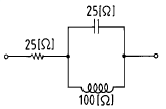
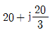
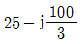
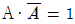
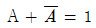

소방설비산업기사(전기) (2004-03-07 기출문제)
1과목: 소방원론
1. 건물에서 초기의 발화 위험물에 대한 화재하중을 감소시키는 방법은?
- 방화구획의 세분화
- 내장재 불연화
- 소화시설의 증강
- 건물 높이의 제한
(정답률: 57%)

2. 철골구조의 내화피복 종류로서 내화성이 가장 좋은 것은?
- 라스 몰탈바름
- 석면 뿜칠과 암면 뿜칠
- 경량 성형판 붙임
- 인공 경량 골재 콘크리트 쌓기
(정답률: 62%)
3. 건물화재시 후레쉬 오버의 영향이 가장 적은 것은?
- 내장재료
- 개구율
- 화원의 크기
- 방화구획
(정답률: 49%)
4. 화재시의 연소 생성물에 속하지 않은 것은?
- 불꽃
- 수증기
- 연기
- 수소가스
(정답률: 43%)
5. 자연배연과 관계가 가장 깊은 것은?
- 스모그 타워
- 건물에 설치된 창
- 송풍기 설치
- 배연기 설치
(정답률: 72%)
6. 발화의 요인인 정전기를 발생하도록 하는 것은?
- 마찰을 적게 한다.
- 도전성 재료를 사용한다.
- 접촉되는 두 가지 물체를 이격시킨다.
- 고전압에 의한 이온화법을 사용한다.
(정답률: 38%)
7. 다음 류별위험물중 다량의 주우냉각소화로 적합치 못한 것은?
- 제1류 위험물
- 제2류 위험물
- 제5류 위험물
- 제6류 위험물
(정답률: 32%)
8. 산소의 공기중 확산속도는 수소의 공기중 확산속도에 비해 몇 배정도 인가? (단, 산소의 분자량은 32, 수소는 2로 본다.)
- 4
- 16
- 1/4
- 1/16
(정답률: 31%)
9. 연소현상에 대한 설명으로 가장 적합한 것은?
- 산소와 열을 수반하는 반응이다.
- 산소와 반응하는 것이다.
- 빛과 열을 수반하면서 산소와 반응하는 것이다.
- 가연성 가스를 발생시키기 위한 반응이다.
(정답률: 70%)
10. 금속분 화재시 주수소화하면 아니되는 이유는?
- 산소가 발생하여 연소를 돕기 때문에
- 유독가스가 발생하여 인체에 해를 주기 때문에
- 질소가 발생하여 소화자가 질식할 우려가 있으므로
- 수소가 발생하여 연소를 더욱 촉진시키므로
(정답률: 56%)
11. 물 또는 습기와 접촉하면 급격히 발화하는 물질은?
- 농황산
- 금속 나트륨
- 황린
- 아세톤
(정답률: 69%)
12. 연소생성물 중 가장 독성이 큰 것은?
- 포스겐
- 염화수소
- CO
- CO2
(정답률: 80%)
13. 목재의 연소에 영향을 주지 않는 것은?
- 열전도율
- 가열속도
- 목재의농도
- 수분의 함유량
(정답률: 59%)
14. 가연물이 될 수 있는 조건으로 옳지 않은 것은?
- 산화되기 쉬울것
- 열전도율이 클 것
- 활성화 에너지가 적을 것
- 산소와결합시 발열량이 클 것
(정답률: 55%)
15. 이산화탄소(CO2)소화약제에 대한 설명으로 틀린 것은?
- 상온에서 무색 무취인 기체이다.
- 공기보다 비중이 무겁다.
- 전기 절연성이 좋고 가연성 액체 등이 위험물화재에 적응성이 있다.
- 독성이 없어 사람이 많은 곳에 사용해도 무방.
(정답률: 63%)
16. 가연물질의 조건으로 옳지 않은 것은?
- 산화하기 쉽고, 산소와 결합시 발열량이 커야 한다.
- 연소반응을 일으키는 활성화 에너지가 커야 한다.
- 열의 축적이 용이하여야 한다.
- 연쇄반응을 일으키기 쉬워야 한다.
(정답률: 80%)
17. 가연물질이 완전 연소하면 어떤 물질이 발생하는가?
- 산소
- 물, 일산화탄소
- 일산화탄소, 이산화탄소
- 이산화탄소, 물
(정답률: 43%)
18. 할론 소화약제 중 소화효과가 가장 좋고 독성이 가장 약한 것은?
- 할론1301
- 할론104
- 할론1211
- 할론2402
(정답률: 78%)
19. 할로겐화합물 소화약제의 원자중 연쇄반응 차단에 의한 소화효과가 가장 큰 원자는?
- F(불소)
- Cl(염소)
- Br(브롬)
- Ｉ(요오드)
(정답률: 42%)
20. 위험물 탱크의 누유 검사관의 설치기준에 대한 설명으로 틀린 것은?
- 이중관으로 하여야 한다.
- 재료는 금속관으로 하여야 한다.
- 재료는 경질합성수지관으로 하여야 한다.
- 관의 말단에는 소공이 있어야 한다.
(정답률: 38%)
2과목: 소방전기회로
21. 이상적인 전압원과 전류원에 대한 설명중 옳은 것은?
- 전압원의 내부저항은 ∞이고 전류원의 내부저항은 0 이다.
- 전압원의 내부저항은 0 이고 전류원의 내부저항은 ∞ 이다.
- 전압원, 전류원의 내부저항은 흐르는 전류에 따라서 변한다.
- 전압원의 내부저항은 일정하고 전류원의 내부저항은 일정하지 않다.
(정답률: 34%)
22. 솔레노이드 코일에 흐르는 전류와 코일 권회수와 자력의 강도에 관한 관계를 설명한 것으로 가장 적당한 것은?
- 자력의 강도는 전류와 권회수에 비례한다.
- 자력의 강도는 전류에 비례하고 권회수에 반비례한다.
- 자력의 강도는 전류의 제곱에 비례한다.
- 자력의 강도는 권회수의 제곱과 전류에 비례한다.
(정답률: 47%)
23. 회로의 합성 임피던스는 몇 Ω 인가?

- 25+j20
- 25-j20


(정답률: 40%)
24. 2분간에 876,000[J]의 일을 할 때 전력은 몇 [kW]인가?
- 7.3[㎾]
- 73[㎾]
- 730[㎾]
- 0.73[㎾]
(정답률: 56%)
25. 디지탈 제어의 이점이 아닌 것은?
- 감도의 개선
- 드리프트(drift)의 제거
- 잡음 및 외란의 영향의 감소
- 프로그램의 단일성
(정답률: 67%)
26. 가동코일형 계기의 지시값은?
- 평균값
- 실효값
- 파형값
- 파고값
(정답률: 33%)
27. 단상 100V의 교류전원에 1500W의 전동기를 접속했더니 20A의 전류가 흘렀다면 이 전동기의 역률은 몇 % 인가?
- 65
- 70
- 75
- 80
(정답률: 42%)
28. 시퀀스 제어에 대한 설명으로 옳지 않은 것은?
- 논리회로가 조합되어 사용된다.
- 기계적 접점도 사용된다.
- 전체 시스템에 연결된 접점들이 일시에 동작할 수 있다.
- 시간지연요소가 사용된다.
(정답률: 76%)
29. 3Ω의 저항 10개를 직렬로 연결하면 병렬로 연결했을 때의 몇 배가 되는가?
- 3
- 10
- 30
- 100
(정답률: 27%)
30. 정류기의 평활회로는 어느것을 이용한 것인가?
- 저역필터
- 고역필터
- 대역저지필터
- 대역통과필터
(정답률: 29%)
31. PID동작에 대한 설명으로 옳은 것은?
- 응답속도는 빨리할 수 있으나 오프셋이 제거되지 않는다.
- 사이클링과 오프셋이 제거되고 응답속도가 빠르며 안정성이 있다.
- 사이클링을 제거할 수 있으나 오프셋이 생기게 된다.
- 오프셋은 제거되나 제어동작에 큰 부동작시간이 있으면 응답이 늦어지게 된다.
(정답률: 72%)
32. 콘덴서만의 회로에서 전압과 전류 사이의 위상 관계는?
- 전압이 전류보다 90°뒤진다.
- 전압이 전류보다 90° 앞선다.
- 전압이 전류보다 180° 뒤진다.
- 전압이 전류보다 180° 앞선다.
(정답률: 48%)
33. 전기의 성질에 대한 설명중 틀린 것은?
- 원자는 그의 중심에 원자핵이 있다.
- 원자핵은 양성자와 중성자로 되어 있다.
- 전자 1개의 전하량은 -1.602×10-18[C]이다.
- 전하를 가지고 있는 것은 전자와 양성자이다.
(정답률: 39%)
34. 서보전동기의 특징에 대한 설명으로 틀린 것은?
- 저속이며, 원활한 운전이 가능하다.
- 급가속 및 급감속이 용이한 것이어야 한다.
- 원칙적으로 정역전이 가능해야 한다.
- 직류용은 없고, 교류용만 있다.
(정답률: 81%)
35. 인가전압의 변화에 따라서 저항값이 비직선적으로 바뀌는 회로소자는?
- 바리스터
- 서미스터
- 트랜지스터
- 다이오드
(정답률: 43%)
36. 어느 회로의 유효전력은 80[W]이고, 무효전력은 60[Var]이다. 이 때의 역률 cosθ의 값은?
- 0.8
- 0.85
- 0.9
- 0.95
(정답률: 54%)
37. 코일을 지나가는 자속이 변화하면 코일에 기전력이 발생한다. 이때 유기되는 기전력의 방향을 결정하는 법칙은?
- 렌쯔의 법칙
- 플레밍의 왼손법칙
- 키르히호프의 법칙
- 플레밍의 오른손법칙
(정답률: 35%)
38. 전류 측정에 사용되지 않는 것은?
- 가동철편형계기
- 정전형계기
- 가동코일형계기
- 열전대형계기
(정답률: 22%)
39. 논리식중 성립하지 않은 것은?
- A+A=A
- A·A=A


(정답률: 59%)
40. L=1H인 인덕턴스에 i(t)=10e-2t인 전류를 가할 때 t초 후에는 L의 단자전압이 몇 V 가 되는가?
- 10e-t
- -10e-2t
- 20e-t
- -20e-2t
(정답률: 37%)
3과목: 소방관계법규
41. 화재의 예방 또는 진압대책을 위하여 시행하는 소방대상물에 대한 검사에 관한 사항으로 틀린 것은?
- 원칙적으로는 해뜨기 전이나 해진 뒤에 하여서는 아니된다.
- 검사 계획에 대하여 소방대상물의 관계인이 미리 알지 못하도록 조치하여야 한다.
- 검사자는 검사업무를 수행하면서 알게 된 관계인의 비밀을 다른 사람에게 누설하여서는 아니된다.
- 화재예방을 위하여 특히 필요하다고 인정되는 경우에는 의용소방대원에게도 검사를 행하게 할 수 있다.
(정답률: 57%)
42. 지정수량 이상의 위험물을 차량으로 운반할 때 에는 기준에의한 표지를 부착하도록 되어 있다. 이 때의 규격 및 재료가 맞게 된 것은?
- 세로 0.3m 가로 0.6m의 흑색판에 황색의 반사도료
- 세로 0.3m 가로 0.6m의 흑색판에 흰색의 반사도료
- 세로 0.3m 가로 0.6m의 청색판에 황색의 반사도료
- 세로 0.3m 가로 0.6m의 청색판에 흰색의 반사도료
(정답률: 41%)
43. 다음중 위험물제조소의 피뢰설비는 지정수량의 몇 배 이상일 경우 설치하는가?
- 5배
- 10배
- 15배
- 20배
(정답률: 66%)
44. 인화성액체 물질로 분류되어 있는 위험물은?
- 마그네슘
- 동식물유류
- 황산
- 질산
(정답률: 71%)
45. 소방대상물로부터 하나의 소방용수시설까지의 거리가 도시계획법에 의한 공업지역은 몇 m 이내가 되도록 설치하여야 하는가?
- 60
- 80
- 100
- 120
(정답률: 70%)
46. 방염대상물품이 아닌 것은?
- 전시용 합판
- 호텔에서 사용하는 매트레스
- 카페트
- 대도구용 합판
(정답률: 56%)
47. 화재경계지구의 지정은 누가 하는가?
- 시·도지사
- 소방서장
- 소방본부장
- 행정자치부장관
(정답률: 67%)
48. 질산의 위험물 중 틀린 것은?
- 폭발성이 없으나 환원성이 강한 물질과 혼합하여 발화 또는 폭발한다.
- 자신은 폭발성이 없으나 유기물과 혼합하면 발화 한다.
- 증기 및 발생된 분해 가스는 모두 대단히 유독하며 부식성이 강해 인체에 해롭다.
- 소방법상 비중이 1.82 이상이 되어야 질산으로 취급한다.
(정답률: 49%)
49. 스프링클러설비를 면제할 수 있는 때는 어떤 설비가 기준에 적합하게 설치된 때인가?
- 옥외소화전설비
- 옥내소화전설비
- 동력펌프소화설비
- 물분무등소화설비
(정답률: 50%)
50. 소방시설공사업자가 소방시설공사를 하고자 할 때에는 누구에게 시공신고를 하여야 하는가?
- 시·도지사
- 소방본부장 또는 소방서장
- 도급인이 지정한 소방시설관리사
- 도급인이 지정한 소방설비기술사
(정답률: 49%)
51. 소방응원에 대한 사항으로 옳은 것은?
- 화재현장에 이웃한 소방본부장 또는 소방서장에게는 화재의 대소에 관계없이 응원요청을 하여야 한다.
- 응원출동시의 지휘권은 응원을 요청한 쪽이 갖는다.
- 응원출동의 비용은 지원을 하는 쪽이 부담한다.
- 소방응원은 행정자치부에서 직접 관장한다.
(정답률: 36%)
52. 한국소방안전협회장이 실시하는 방화관리업무 등의 강습은 연 몇 회 실시하는 것을 원칙으로 하는가?
- 1
- 2
- 3
- 4
(정답률: 46%)
53. 소방시설공사업을 등록하려고 할 때 등록의 결격사유자로 분류되지 않는 사람은?
- 금치산자
- 한정치산자
- 미성년자
- 파산자로서 복권되지 아니한 자
(정답률: 40%)
54. 다음중 간이탱크저장소의 통기관의 지름은 몇 mm이상으로 하는가?
- 20mm
- 25mm
- 30mm
- 40mm
(정답률: 50%)
55. 화재원인과 피해의 조사에 관한 설명으로 맞는 것은?
- 화재원인과 피해의 조사는 소화활동과 동시에 시작하여야 한다.
- 화재원인과 피해의 조사는 소화활동과 관계없이 시작하여야 한다.
- 화재원인과 피해의 조사는 소화활동이 끝나고 경찰의 수사가 끝난 다음에 시작하여야 한다.
- 화재원인과 피해의 조사는 소화활동이 끝난 직후에 시작하여야 한다.
(정답률: 74%)
56. 관광휴게시설에 해당되는 것은?
- 어린이회관
- 박물관
- 미술관
- 박람회장
(정답률: 18%)
57. 소방대상물의 위치,구조 및 설비의 상황을 판단하여 화재의 발생 및 연소의 우려가 현저하게 적거나 화재로 인한 피해를 최소한도로 줄일 수 있다고 인정하는 경우의 소방시설에 관한 사항으로 옳은 것은?
- 소방시설은 어떠한 경우라도 모두 갖추어야 한다.
- 소방시설의 일부만을 면제할 수 있다.
- 관련 소방시설의 모두를 면제해 주어야 한다.
- 소방시설의 전부 또는 일부를 면제할 수 있다.
(정답률: 48%)
58. 제조소등의 정기점검의 구분에서 위험물탱크 안전성능 시험자의 점검대상 범위에서 구조안전 점검의 기준은?
- 지하탱크시설(2만 리터 이상)
- 옥내탱크시설(10만 리터 이상)
- 옥외탱크저장시설(100만 리터 이상)
- 옥외탱크저장시설(1000만 리터 이상)
(정답률: 66%)
59. 근린생활시설, 위락시설, 숙박시설 등은 연면적 몇 m2 이상인 경우에 자동화재탐지설비를 설치하여야 하는가?
- 400
- 600
- 800
- 1000
(정답률: 59%)
60. 석유판매취급소에 대한 설명으로 옳은 것은?
- 복층건축물에 설치하여야 한다.
- 건축물의 지하층에 설치하여야 한다.
- 작업실을 두어야 하며, 점포는 두어서는 아니된다.
- 위험물의 저장시설을 설치하여야 한다.
(정답률: 62%)
4과목: 소방전기시설의 구조 및 원리
61. 비상전원 전용수전설비의 설명으로 틀린 것은?
- 비상전원의 일종이다.
- 실내에 설치하는 경우에는 원칙상 불연구획내에 설치하여야 한다.
- 비상전원 전용수전설비의 종류로는 오픈식의 것도 있다.
- 비상전원 전용수전설비는 큐비클식이어야 한다.
(정답률: 37%)
62. 옥내소화전설비에 설치하여야 하는 제어반은?
- 감시제어반과 발신제어반
- 동력제어반과 정류제어반
- 발신제어반과 정류제어반
- 감시제어반과 동력제어반
(정답률: 42%)
63. 수동발신기 스위치를 작동시켰더니 화재표시동작을 하지 않았다. 그 원인으로 볼 수 없는 것은?
- 응답램프 불량
- 배선의 단락
- 발신기 접점불량
- 감지기 불량
(정답률: 40%)
64. 주위온도가 일정상승율 이상이 되는 경우에 작동하는 것으로 일국소에서의 열효과에 의하여 작동하는 감지기는?
- 정온식 스포트형 감지형
- 차동식 스포트형 감지기
- 차동식 분포형 감지기
- 보상식 스포트형 감지기
(정답률: 38%)
65. 이온화식 연기감지기에 사용하는 방사선 동위원소로 적당한 것은?
- Am214
- Am241
- Am341
- Am414
(정답률: 45%)
66. M형수신기는 어디에 설치하여야 하나?
- 경비실
- 아파트복도
- 경찰서
- 관할 소방관서내
(정답률: 37%)
67. 방송에 의한 비상경보설비에서 1층에서 화재가 발생했을 경우 우선적으로 경보를 발하여야 할 곳은 어느 곳인가? (단, 건물의 층수는 12층이며 지하의 층수는 3층이다.)
- 1층, 2층, 지하층
- 1층, 2층
- 1층, 지하층
- 1층 이상의 층
(정답률: 58%)
68. 무선통신보조설비의 증폭기에는 비상전원이 부착된 것으로 하고 당해 비상전원 용량은 무선통신보조설비를 유효하게 몇 분이상 작동시킬 수 있어야 하는가?
- 10
- 20
- 30
- 40
(정답률: 68%)
69. 비상콘센트설비는 하나의 회로에 설치하는 비상콘센트의 수가 몇 개 이하로 설치되어야 하는가?
- 5
- 10
- 15
- 20
(정답률: 71%)
70. 간이탱크저장소의 탱크의 수 및 용량에서 1개의 탱크의 용량은 몇 리터 이하로 하여야 하는가?
- 600
- 700
- 800
- 900
(정답률: 51%)
71. 가스누설탐지기에 사용되는 변압기의 정격1차전압은 몇 V 이하로 하여야 하는가?
- 220
- 300
- 380
- 440
(정답률: 36%)
72. 옥내소화전설비의 위치를 표시하는 표시등은 함의 상부에 설치하되 그 불빛은 부착면으로부터 몇 도이상의 범위안에서 10m이내의 어느 곳에서도 쉽게 식별할 수 있어야 하는가?
- 5
- 10
- 15
- 20
(정답률: 61%)
73. 객석통로의 직선부분의 길이가 15[m]인 경우 객석유도등은 최대 몇개 이상 설치하여야 하는가?
- 6
- 5
- 4
- 3
(정답률: 48%)
74. 발신기나 중계기와 비교했을 때 감지기에만 해당되는 시험 항목은?
- 주위온도시험
- 노화시험
- 절연저항시험
- 절연내력시험
(정답률: 28%)
75. 자동화재속보설비의 속보기는?
- A형과 B형으로 구분된다.
- M형과 P형으로 구분된다.
- P형 1급과 P형 2급으로 구분된다.
- R형과 GR형으로 구분된다.
(정답률: 25%)
76. 종합방재설비의 구성요소가 아닌 것은?
- 제연모터
- 항공장애등
- Elevator
- 콘센트
(정답률: 24%)
77. 검출기로서 미터릴레이(meter relay)를 필요로 하는 감지기는?
- 차동식분포형공기관식감지기
- 보상식스포트형감지기
- 감지선형감지기
- 열전대식감지기
(정답률: 46%)
78. 열전대식 분포형감지기의 미터릴레이는 완만한 온도상승에는 동작하지 않는다. 그 이유로 적당한 것은?
- 리크밸브장치가 있기 때문이다.
- 중공(中空)부분에 열기전력이 발생하기 때문이다.
- 미터릴레이 자체가 동작하지 않도록 고정되어 있기 때문이다.
- 열기전력이 상쇄되는 장치가 있기 때문이다.
(정답률: 40%)
79. 누전경보기에 설치하는 감도조절장치의 조정범위는 최대 몇 A 이하인가?
- 1
- 2
- 3
- 5
(정답률: 72%)
80. 중계기는 화재 신호를 수신하고부터 발신개시까지의 시간을 얼마[초] 이내로 하여야 하는가?
- 3
- 4
- 5
- 6
(정답률: 37%)